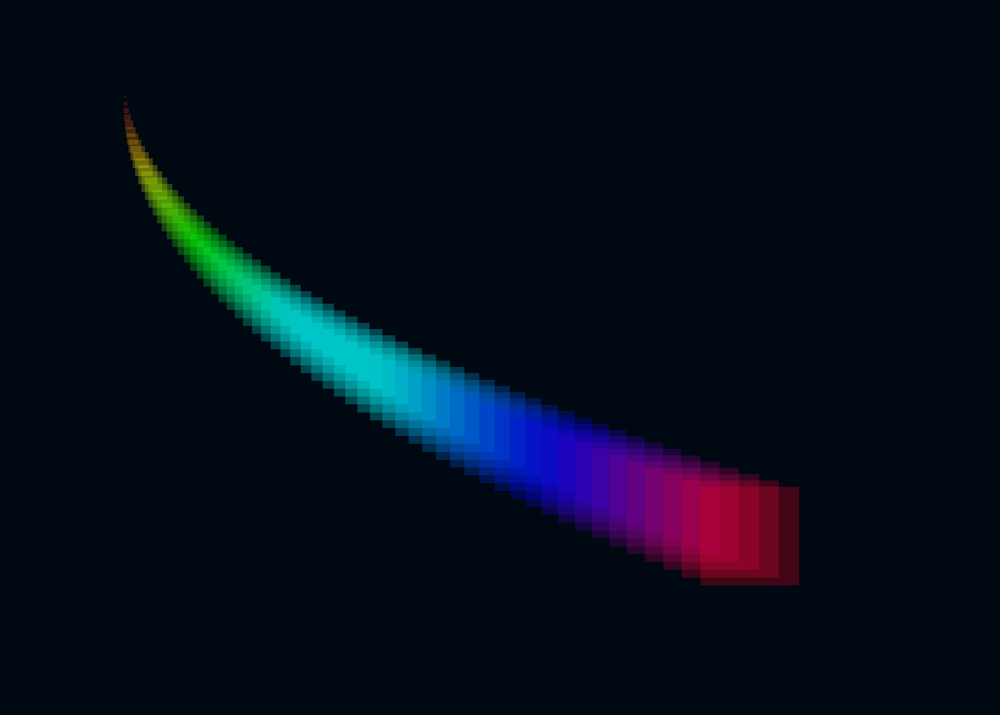
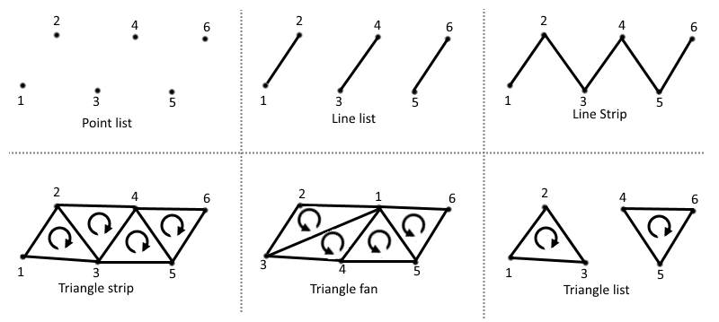

How to write a custom graphics¶
Warning
You need to go through the Vulkan crash course before following this guide. You also need to go through the how to write a custom visual guide first.
In this section, we'll show how to create a custom graphics by writing custom GLSL shaders. This is an advanced topic as it requires understanding the basic of GPU graphics programming.
Note
Only the C API supports custom graphics at the moment. Python bindings for custom graphics will come in an upcoming version. Datoviz already includes the code necessary to compile GLSL shaders to SPIR-V on the fly (based on Khronos glslang).
The full source code for this example can be found in examples/custom_graphics.c.
As a toy example, we'll create a graphics with square points of various size and color. Specifically, we'll require each point to have a different size (which is not supported in the existing point graphics), and a color depending directly on the size and computed directly on the GPU. We'll use a single byte per vertex to store the vertex size (between 0 and 255 pixels), and we'll use no memory for the color since it will be determined directly by this value. This kind of memory optimization is one of the use-cases of writing custom graphics. Limiting memory usage is important when dealing with extremely large datasets (tens or hundreds of millions of points).

Writing a custom graphics involves the following steps:
- Choosing the primitive type.
- Defining the vertex data structure and corresponding vertex shader attributes.
- Writing the vertex shader.
- Writing the fragment shader.
- Compiling the GLSL shaders to SPIR-V (may be done automatically in the future).
- Writing the custom graphics.
- Writing the custom visual.
- Writing a simple test.
Note
Here, we show how to create a custom graphics compatible with the scene API, so that it can be used added to the scene the same way as builtin visuals. One could however decide not to use the scene API at all, and leverage instead the vklite API directly. This allows one to create entirely custom and standalone applications. This is not documented at the moment, and one should look at the vklite unit tests to understand how to use the vklite API directly.
Choosing the graphics primitive type¶
Vulkan supports six major types of primitives:
- point list: square points with an arbitrary size,
- line list: disjoint aliased line segments,
- line strip: joined aliased line segments,
- triangle strip: joined triangles consecutively sharing an edge,
- triangle fan: joined triangles all sharing a single corner (the first vertex),
- triangle list: disjoint triangles,
Other less common primitive types are described in the Vulkan specification.
Warning
Triangle fans are not supported on macOS.
 Schematic from the Vulkan Cookbook by Pawel Lapinski, O'Reilly
Note
The circular arrows in the triangles above indicate the orientation of the triangles, which is taken into account by the GPU. It is good practice to always ensure that all triangles constituting a given object are consistent. For example, when triangulating a square with two triangles, the order of the vertices should be chosen such that both triangles are directly oriented. The graphics pipeline can be configured to handle triangle orientation in a specific way. For example, one can make a graphics pipeline where indirectly oriented triangles are automatically discarded.
Line primitives typically have a width of 1 pixel, although some hardware supports thicker lines. In Datoviz, thick, high-quality lines are implemented with triangles instead (line triangulation), and the antialiased thick line is drawn directly in the fragment shader. "Basic" line primitives are only used for testing and for special high-performance applications where scalability and performance are more important than visual quality.
The most commonly-used primitive types in scientific visualization are essentially point lists and triangle lists (and to a lesser extent, triangle strips).
In this example, we'll use a point list, where each point will correspond to one square.
Defining the vertex data structure¶
Once we know we'll use a point list as a primitive, the next step is to define the vertex data structure / vertex shader attributes. Here, we want the following attributes for each vertex:
- the point position (center of the square), as a
vec3, - the point size (edge length of the square, in pixels), as an
uint8_t. The point size will be limited to a maximum of 255 pixels in this toy example.
We could have simply used a floating-point for the edge length, but that would have used four bytes instead of one. This is also to show the versatility of Vulkan and GPU programming, where we have full control on the data types used on both the GPU and CPU.
Here is our vertex C structure:
// We define the vertex structure for our graphics pipeline.
typedef struct
{
vec3 pos; // 3D point position
uint8_t size; // point size, in pixels, between 0 and 255.
} PointVertex;
We also need to define the attributes in GLSL:
layout (location = 0) in vec3 pos; // x, y, z positions
layout (location = 1) in float size; // point size, between 0.0 and 255.0
Attribute format¶
In this example, we use a uint8_t (byte) on the CPU, but a float on the GPU. Vulkan provides a way to specify the way we want to do the casting. This is done when creating the graphics pipeline below. We can just say here that we'll use the Vulkan format VK_FORMAT_R8_USCALED. This format means that:
- Number of components. There is a single component (scalar), the
RinR8means "red" component: this is the component used for scalar values. If using a pair of components, we would have both aRandGcomponent (green). This naming convention using color names comes from the fact that these GPU formats are typically used to represent colors, but they can actually represent any type of numerical data. - Number of bits per component. The 8 in
R8means that our red component is represented with 8 bits. - Signedness. The
UinUSCALEDmeans that we use an unsigned format. - Scaling. The
SCALEDmeans that the byte, a number between 0 and 255, will be converted to a float without normalization: 255 becomes 255.0.
Here are the other common scaling options provided by Vulkan when using bytes:
| Scaling | GPU number type | Range |
|---|---|---|
UNORM |
float |
[0.0, 1.0] |
SNORM |
float |
[-1.0, 1.0] |
USCALED |
float |
[0.0, 255.0] |
SSCALED |
float |
[-128.0, +127.0] (?) |
UINT |
int |
[0, 255] |
SINT |
int |
[-128, 127] (?) |
You'll find more information here:
- Full list of formats in the Vulkan spec,
- Hardware support of the formats: some formats are not supported by all existing GPUs. This website is quite useful to know what formats have the best hardware support.
Writing the vertex shader¶
We're now ready to write the vertex shader. Here is the full source code of the vertex shader:
// code from `examples/custom_point.vert`:
// GLSL version
#version 450
// To be compatible with the scene API, all graphics shaders must include a common GLSL include
// file. It defines common uniform bindings and common functions (for example, transform()).
// These .glsl files are found in `include/datoviz/glsl`, so one needs to pass
// `-Ipath/to/datoviz/include/datoviz/glsl` to the `glslc` command (see build.sh script).
#include "common.glsl"
// Here, we also use GLSL colormaps to compute the square color directly in the vertex shader,
// without using the colormap texture.
#include "colormaps.glsl"
// Here, we describe the vertex shader attributes.
layout (location = 0) in vec3 pos; // x, y, z positions
layout (location = 1) in float size; // point size, between 0.0 and 255.0
// We made the unusual choice here to use a float in the shader, which corresponds to a uint8 byte
// in C. We also decided not to normalize it, i.e. that the byte 255 corresponds to the float 255.0
// in the shader (VK_FORMAT_R8_USCALED format). Other choices can be made when specifying the
// attribute format in the custom graphics definition.
// Here, we describe the "varying" variables. These are special values output by the vertex shader,
// and passed to the fragment shader.
layout (location = 0) out vec4 out_color;
// Main shader code.
void main() {
// Here, "pos" is the position of the vertex being processed. gl_Position is a special output
// variable that returns the vertex final position in normalized device coordinates. It
// is a vec4 vector, the fourth component is the homogeneous coordinate.
// The "transform()" function is defined in common.glsl. It applies the model, view, proj
// matrices stored in the first (common) uniform buffer (MVP buffer).
gl_Position = transform(pos);
// This special variable is an output variable that contains the point size, in pixels,
// of the vertex being processed. It is reserved to graphics pipelines with a point list
// primitive.
gl_PointSize = size;
// Here, we set the varying variable that will be passed to the fragment shader.
// The function colormap() is implemented in colormaps.glsl. It supports a few colormaps
// that are implemented directly in GLSL, without using a texture. The second argument
// is a value between 0 and 1, hence the normalization with the size which is in pixels.
out_color = colormap(DVZ_CMAP_HSV, size / 255.0);
out_color.a = .25; // alpha component for some transparency
}
A few comments can be found below.
Common shader resources¶
The #include directive is provided for convenience by the GLSL to SPIR-V compiler glslc. It is used extensively in Datoviz. It provides a simple way of making all graphics shaders share some functions and resources. In particular, we make the convention that, in order to be compatible with the scene API, all graphics pipelines in Datoviz must have the following common slots:
layout (std140, binding = 0) uniform MVP {...};
layout (std140, binding = 1) uniform Viewport {...};
| Binding | Descriptor type | Description |
|---|---|---|
| 0 | uniform | structure with the model-view-proj matrices |
| 1 | uniform | structure with viewport information |
This is done just by including common.glsl in every shader. Note that this is not required when using completely standalone graphics pipelines that will never be used with the scene API.
When one needs to add another bindings, the numbering should start at USER_BINDING, a special GLSL macro that is currently 2.
Uniform alignment
The std140 keyword refers to the alignment of the fields within the uniform structure. We're not going into the details, but we'll present some relatively arbitrary rules that we follow in Datoviz so that we don't need to think too much about memory alignment considerations when working with uniform structures:
- always use the
std140keyword when defining uniform resources in the shaders, - NEVER use the following data types in a uniform structure:
vec3,ivec3,mat3, and any format with a 3 in it. If you need a vector with three components, use avec4and leave the last component alone. This only affects uniforms, NOT attributes.
Varying variables¶
The vertex shader may pass some variables to the next stage, typically the fragment shader, using varying variables.
A crucial difference between the vertex and fragment shaders is that the vertex shader executes on every vertex, whereas the fragment shader executes on every pixel. When the vertex shader passes a value to the fragment shader, the GPU makes a linear interpolation for all pixels between two vertices in the same primitive. This is specific to line and triangle primitives, not points.
For example, passing 0 to one vertex and 1 to the next vertex in a graphics with a line primitive would result in all pixels being passed a real value between 0 and 1 depending on the position of that pixel within that line segment. This system is used in particular with:
- Color gradients,
- Texture coordinates.
Position transformation¶
The common.glsl file defines (several overloaded versions of) the function transform(), which applies the model-view-proj matrices stored in the first bound resource, the MVP uniform. The associated C structure is DvzMVP:
struct DvzMVP
{
mat4 model; // model 4x4 matrix
mat4 view; // view 4x4 matrix
mat4 proj; // projection 4x4 matrix
float time; // elapsed time since the start of the application, in seconds
};
The transformation is basically gl_Position = to_vulkan(proj * view * model * position).
The to_vulkan() internal function transforms the position from the OpenGL/Datoviz 3D coordinate system (y up, z toward the user) to the Vulkan coordinate system (y down, z toward the inside of the screen).
Special GLSL variables¶
We use a few special GLSL variables in the vertex shader:
| Name | Type | Description |
|---|---|---|
gl_Position |
vec4 |
final vertex position in normalized device coordinates |
gl_PointSize |
float |
size of the point, when using the point list primitive |
There are many more special variables available in each type of shader. You'll find the list of special GLSL variables here.
Colormaps¶
The colormap() function is implemented in colormaps.glsl. It provides a GLSL implementation of a few common colormaps, which allows to compute the color as a function of a scalar value without using a texture. There are a few advantages to this, mostly related to performance and avoiding edge effects when using nearest interpolation in the texture.
Writing the fragment shader¶
We now pass to the fragment shader. Here is the code:
// code from `examples/custom_point.frag`:
#version 450
#include "common.glsl"
// The "in" variables here MUST correspond to the "out" variables from the vertex shader.
layout (location = 0) in vec4 in_color;
// The first output variable of the fragment shader must be a vec4 variable with the RGBA
// components of the pixel being processed.
layout (location = 0) out vec4 out_color;
void main()
{
// This macro is used to implement clipping in the inner viewport, when using panel margins.
// All fragment shader of all graphics must include this macro for now.
CLIP
// Here, we simply pass the varying color (already computed by the vertex shader) to the
// output variable.
// NOTE: we could also have passed the point size from the vertex shader to the fragment
// shader, and compute the colormap here. HOWEVER the computation of the colormap would have
// been done for each *pixel*, rather than each *vertex*. Since we're using uniform square
// colors in this example, that would have resulted in wasted duplicate computations and
// unjustified loss of performance.
// When the pixel color is non uniform across the primitive, and not just linearly interpolated
// between the vertices, one can compute the pixel color directly in the fragment shader.
out_color = in_color;
}
Here are a few comments.
Clipping¶
Datoviz panels may have margins around them. We make the distinction between:
| Viewport | Description |
|---|---|
| inner viewport | area of the panel excluding the margins |
| outer viewport | area of the panel including the margins |
We follow the convention that the normalized coordinates [-1, +1] correspond to the inner viewport. Vertices beyond these limits will be rendered in the margins.
Clipping allows to hide all pixels outside the inner viewport. This is how we implement the axes controller: graphics should not be rendered in the margins which contain the tick labels. Any graphics that should be compatible with the axes controller should therefore have the special CLIP macro at the beginning of the fragments shader (implemented in common.glsl). This macro detects whether the current pixel is beyond the inner viewport, and if the graphics has been configured so, it discards that pixel.
Special variables¶
We haven't used any special variable in this fragment shader, but here are two useful variables that we could use:
| Name | Type | Description |
|---|---|---|
gl_FragCoord |
vec4 |
pixel position in window space |
gl_PointCoord |
vec2 |
coordinates of the pixel within the point primitive |
The gl_PointCoord variable is reserved to graphics pipelines using a point primitive. It provides the coordinates, in pixels, of the current pixel within the square. The origin is at the upper-left corner of the square.
Compiling the shaders to SPIR-V¶
Once the shaders have been written, they should be compiled to SPIR-V (unless using Datoviz to compile shaders provided as GLSL code, but this is a work in progress). Here is how to compile the shaders on the command-line:
glslc custom_point.vert -o custom_point.vert.spv
glslc custom_point.frag -o custom_point.frag.spv
The glslc command is provided by the Vulkan SDK.
Writing the custom graphics¶
Here is the code to create a custom graphics compatible with the scene API, and to add it to a custom visual:
// We create a blank graphics that will become our custom graphics.
DvzGraphics* graphics = dvz_blank_graphics(scene, 0);
// Custom graphics creation.
// The first step is to define the vertex and fragment shaders. When using
// dvz_graphics_shader(), one must specify a path to the compiled SPIR-V shaders.
// When writing the shaders in GLSL, it is thus necessary to compile them separately with
// glslc.
dvz_graphics_shader(graphics, VK_SHADER_STAGE_VERTEX_BIT, "custom_point.vert.spv");
dvz_graphics_shader(graphics, VK_SHADER_STAGE_FRAGMENT_BIT, "custom_point.frag.spv");
// We define the graphics pipeline topology: point list here.
dvz_graphics_topology(graphics, VK_PRIMITIVE_TOPOLOGY_POINT_LIST);
// Next, we declare the size of our vertex structure.
dvz_graphics_vertex_binding(graphics, 0, sizeof(PointVertex));
// We now declare the vertex shader attributes, that should correspond to the different
// structure fields in the vertex structure.
// The first attribute is a vec3 in GLSL, and a vec3 in C too.
dvz_graphics_vertex_attr(
graphics, 0, 0, VK_FORMAT_R32G32B32_SFLOAT, offsetof(PointVertex, pos));
// The second attribute is a float in GLSL, and a byte (uint8) in C. We use the special
// format VK_FORMAT_R8_USCALED to declare this.
dvz_graphics_vertex_attr(
graphics, 0, 1, VK_FORMAT_R8_USCALED, offsetof(PointVertex, size));
// Now that we've set up the graphics, we create it.
dvz_graphics_create(graphics);
// We add our custom graphics to a custom visual.
dvz_custom_graphics(visual, graphics);
As shown here, the creation of a custom graphics involves the following steps:
- Defining the shaders,
- Defining the primitive type,
- Declaring the vertex structure, the format of each field, and the casting between the GPU and GPU.
There are further functions in the vklite API to customize the creation of the graphics pipeline. Refer to the Datoviz C API reference for more details.
Writing the custom visual¶
Here is how to add a custom graphics to a custom visual:
// We create a blank visual, to which we'll add our custom visual.
DvzVisual* visual = dvz_blank_visual(scene, DVZ_VISUAL_FLAGS_TRANSFORM_NONE);
// ... creating the custom graphics...
// We add our custom graphics to a custom visual.
dvz_custom_graphics(visual, graphics);
At this point, the custom visual contains common sources (vertex, MVP, viewport) and props. One could then define more sources and props.
Writing a simple test¶
Finally, here is how to use our custom visual with a custom graphics:
// ... creating the custom visual with the custom graphics...
// We add the custom visual to the panel.
dvz_custom_visual(panel, visual);
// Now, we prepare the vertex data. We could have defined and used props, but we'll show
// another method instead. We create the vertex buffer directly, using the PointVertex
// structure we've created.
const uint32_t N = 64; // number of points
PointVertex* vertices = calloc(N, sizeof(PointVertex)); // vertex buffer
float t = 0;
for (uint32_t i = 0; i < N; i++)
{
t = i / (float)(N - 1);
// vertex position
vertices[i].pos[0] = -.75 + 1.25 * t * t;
vertices[i].pos[1] = +.75 - 1.25 * t;
// vertex size, in byte, between 0 and 255.
vertices[i].size = 4 * i + 1;
}
// Here is the crucial bit: we bind the GPU vertex buffer with our struct array.
dvz_visual_data_source(visual, DVZ_SOURCE_TYPE_VERTEX, 0, 0, N, N, vertices);
FREE(vertices);
Here are a few comments:
- Instead of using visual props, we have defined the vertex structure directly. The whole point of the visual props is to avoid doing this, which may not be particularly easy with complex vertex shaders with many attributes. Also, setting the vertex buffer directly requires to understand how the graphics is implemented on the GPU. If some form of triangulation is required, it is up to the user to do it. In this particular example, there is no triangulation as we have a one-to-one correspondance between the squares and the vertices.
- Note that the data buffers passed to the
dvz_visual_data*()functions make a copy of the data, so we're fine freeing it.
Other topics¶
We didn't yet cover these other aspects:
- Other resources (textures, other uniforms),
- Other shaders (geometry shader, tesselation shader),
- Indexed rendering,
- Indirect rendering,
- Fixed functions,
- Depth testing,
- Dynamic states,
- Specialization constants,
- Push constants,
- Custom command buffers,
- Interaction with compute shaders,
- And many other topics...
Checklist for Datoviz contributors¶
This is a handy checklist for developers when adding new graphics to the library (via a pull request).
graphics.h:- Add the typedef of the vertex, item, params structures
- Add new section and structs for vertex, item, params structures
- Make sure all fields in the params struct have a byte size that is not 3 or divisible by 3
- Put comments after each struct field (used by automatic documentation generator)
vklite.h:- Make sure the
DvzGraphicsTypeenum exists, or create a new one
- Make sure the
- Shaders:
graphics_xxx.vert|frag:- Don't forget to import
common.glslin all shaders - The first user binding should be params, should match exactly the struct
- The next bindings should be numbered with USER_BINDING+1 etc
- The body of the main fragment shader function should always begin with
CLIP
- Don't forget to import
graphics.c:- Add new section, with
_graphics_xxx()and_graphics_xxx_callback()if there is a non-default graphics callback function - Write the main graphics function
- Specify the shaders
- Specify the primitive type
- Specify the vertex attributes, should match the vertex shader
- Add the common slots
- Add slots for params/textures
- Specify the graphics callback function
- (optional) Write the graphics callback function
- This function is called when a new item is added to the graphics. What an "item" is is up to the create of a graphics. It's typically the smallest bit of data that has a meaning in the context of the graphics. The graphics callback is mostly used for pre-upload CPU-side "triangulation" of the data, so that the visuals that reuse this graphics don't have to know the details of the triangulation.
- Add the switch case in
dvz_graphics_builtin()
- Add new section, with
test_graphics.h:- Add the new graphics test declaration
test_graphics.c:- Write the body of the test function
- Set to save the screenshot with the graphics name
main.c:- Add the new test to the list of test functions
- Test the graphics without interactivity and save the graphics screenshot
- Add graphics section in
docs/reference/graphics.md